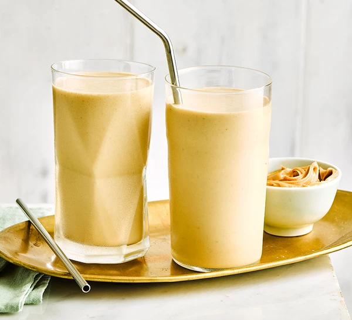

Wash the potatoes and cut into slices 5 mm thick. Fry them in a little olive oil.
Blanch the green beans in lightly salted water. Rinse under cold running water and set aside.
Add the beans and hazelnuts to the potatoes.
Finely chop the hazelnuts and mix together with the potatoes and beans.
Peel and finely chop the garlic and shallots. Grate the zest of the orange
Add everything to the potatoes, stir and season with salt and pepper.
In the meantime, season the pork scallops with salt and pepper and fry in a little butter.
Top the potatoes with flat parsley and serve together with the pork scallops.
Preparation Time: 10 MIN Cook Time: 30 MIN
Ingredients
1 Kg potatoes
2 tbsp olive oil
1 onion
2 red peppers
1 tsp cumin
2 tsp smoked paprika powder
300 g peas, fresh or frozen
450 g large pink shrimps
Handful of flat parsley
Salt and pepper (seasoning)
Cooking Directions
Cut the potatoes into small cubes and boil them in salted water until al dente. Drain and dry.
Dice the onion and red pepper.
Heat the olive oil in a large frying pan over a medium-high heat. Briefly fry the shrimps. Season with salt and pepper. Remove them from the pan and set aside.
Lower the heat and fry the onions (if necessary, add 1 tbsp of oil). Cook for 5 minutes until the onions are soft.
Add the potatoes, cumin and smoked paprika. Leave to cook for a further 4 minutes.
Add the peas and shrimps and cook for another 2 minutes.
Season with salt and pepper.
Roughly chop the parsley and sprinkle over the pan.
Preparation Time: 40 MIN Cook Time: 20 MIN
Ingredients
4-5 potatoes for frying (e.g. Rooster potatoes) (approixmately 500 g)
1 bulb of fennel
1 candied lemon
500 g pork scallops
3 scallions / spring onions
8 cherry tomatoes
150 ml olive oil
1 pinch chili powder
Coriander leaves, chopped
Salt and pepper (seasoning)
Cooking Directions
Heat the plancha.
Peel and slice the scallions / spring onion. Cut the lemon into wedges.
Marinate the pork with the onions and lemon in olive oil with freshly chopped coriander (keep some aside for serving) and the chili powder for 30 minutes, stirring from time to time.
Wash the potatoes and cut into wedges.
Cut the fennel into very thin strips using a mandolin.
Wash and cut the tomatoes in half.
Oil the plancha (or grillpan) and cook the potatoes for 8-10 minutes.
Add the sliced fennel and continue to cook for 6-8 minutes, turning halfway through.
Keep warm on the edge of the plancha.
Cook the marinated pork on the plancha for 5-6 minutes on each side. Set aside for a bit and cut into slices.
Add the tomatoes and the marinate of the meat and continue cooking for 4-5 minutes.
Arrange the vegetables, the marinade and meat on a serving dish and sprinkle with freshly chopped coriander just before serving.
Preparation Time: 40 MIN Cook Time: 20 MIN
Ingredients
800 g potatoes (e.g. Rooster Potatoes)
12 free-range chicken thighs, skin on, boned
1.2 kg ripe cherry tomatoes, various colours
2 bunches of fresh oregano (60 g)
8 tbsp extra virgin olive oil
Juice of a lime
160 g feta cheese
One bag of rocket leaves
Cooking Directions
Preheat the oven to 200 °C/Gas 6.
Put the potatoes in a large saucepan of salted boiling water and cook until tender.
Cut each chicken thigh into three and place in a bowl. Rub the meat with olive oil and season with salt and pepper. Mix together.
Heat a pan big enough to hold all the chicken pieces side by side and put them all in with the skin side down. Flip the chicken once the skin side is crispy and leave to fry for 10 minutes over a low heat until the chicken is almost cooked through. Then transfer the pieces to a large ovenproof dish using a slotted spoon.
When the potatoes are cooked, drain them in a colander. Then press them down lightly with your thumb or a fork.
Take ¾ of the oregano leaves and crush them in a mortar with a pinch of salt. Add 8 tablespoons of extra virgin olive oil and some pepper in an ovendish. Mix well and then add the chicken, the tomatoes, and the rest of the oregano leaves. Mix well again.
Spread the potatoes out in a single layer in the ovenproof dish and bake for 40 minutes in the preheated oven until golden brown. Crumble the feta over it after 25 minutes of baking.
Lovely served with a rocket salad dressed with some lemon juice and extra virgin olive oil.
Healthy Shakes
Preparation Time: 5 MIN Serves: 1
Ingredients
100ml full-fat milk
2 tbsp natural yogurt
1 banana
150g frozen fruits of the forest
50g blueberries
1 tbsp chia seeds
½ tsp cinnamon
1 tbsp goji berries
1 tsp mixed seeds
1 tsp honey (ideally Manuka)
Directions to Make
Put the ingredients in a blender and blitz until smooth. Pour into a glass and enjoy!
Preparation Time: 5 MIN Serves: 2
Ingredients
160g ripe strawberries, hulled
160g baby spinach
1 small avocado, halved and the flesh scooped out
150ml pot bio yogurt
2 small oranges, juiced, plus ½ tsp finely grated zest
Directions to Make
Put all the ingredients in a blender and whizz until completely smooth. If it’s a little thick, add a drop of chilled water then blitz again. Pour into glasses and drink straight away.

Preparation Time: 5 MIN Serves: 1-2
Ingredients
200ml oat milk
1 banana, peeled and chopped
20g peanut butter
1 tbsp rolled oats
pinch of cinnamon
pinch of allspice
pinch of nutmeg (optional)
small handful ice cubes
Directions to Make
Whizz all the ingredients together in a blender (one suitable for crushing ice) until smooth. Pour into a tall glass and serve.